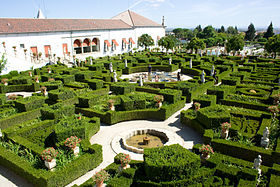

Castelo Branco MHC é uma cidade portuguesa, capital do Distrito de Castelo Branco, situada na região Centro de Portugal, na Beira Interior Sul e na antiga província da Beira Baixa, com cerca de 34 000 habitantes no seu perímetro urbano.
É sede do terceiro maior município português, com 1 438,19 km² de área e 56 109 habitantes (albicastrenses) (2011), subdividido em 19 freguesias. O município é limitado a norte pelo município do Fundão, a leste por Idanha-a-Nova, a sul pela Espanha, a sudoeste por Vila Velha de Ródão e a oeste por Proença-a-Nova e por Oleiros.
Ao contrário de outras cidades da região, que cresceram notavelmente devido à indústria têxtil, Castelo Branco sempre teve uma importância geoestratégica e política em Portugal. Não está, por esse motivo, sujeita às flutuações económicas que deslocalizaram empresas têxteis - mormente de laboração manual desqualificada - como sucedeu na região norte e na Cova da Beira. A composição sociológica predominante é por esse motivo também muito diferente de outras cidades de cultura do operariado.
Foi considerada em 2006, num estudo elaborado pela DECO, a segunda capital de distrito do país com melhor qualidade de vida. Em 2017, encontra-se em 36º lugar nacional, e 7º lugar da região Centro, segundo um estudo pela consultora Bloom Consulting. A padroeira de Castelo Branco é a Nossa Senhora do Rosário
